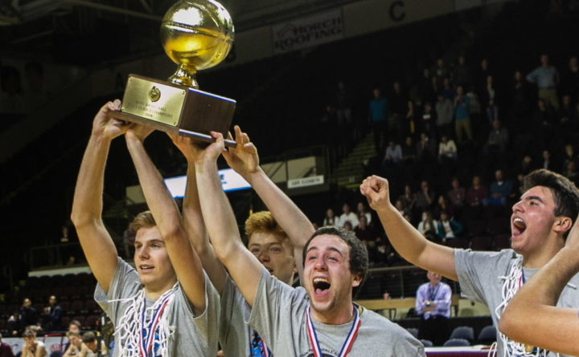

On March 2, 2019, my high school basketball team was able to accomplish something that hadn't been done in our school for exactly 50 years; winning a state championship in basketball.
Here is an article that was written in the Bangor Daily News about us: Caribou boys outlast Cape Elizabeth for first state crown since 1969
Here is another link to an interesting video about the State Championship made by Caribou alumni Ben Ezzy: Small Town, Big Dreams
For me, winning the State Championship had a deeper meaning. It was fulfilling a promise that I had made to my Grandfather. This is an article in the Bangor Daily News that talks about it: How a Caribou senior basketball player fulfilled a promise to his dying grandfather